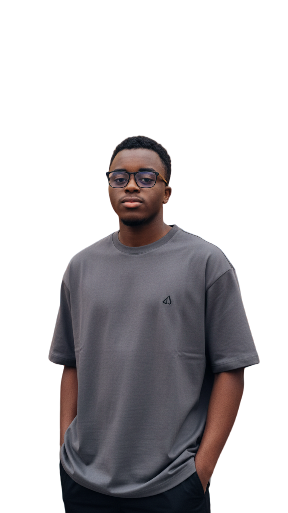
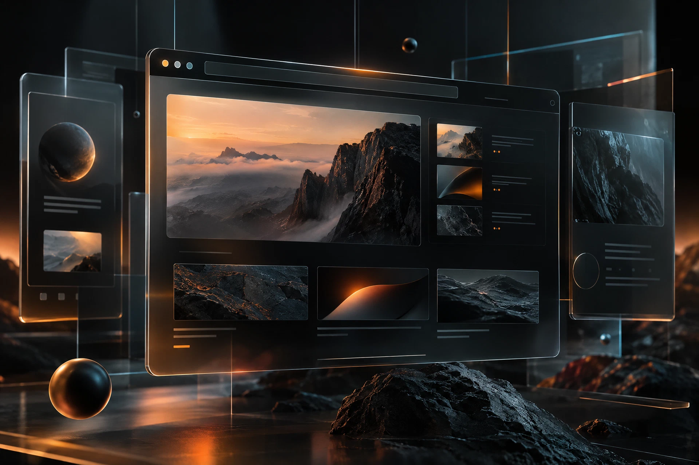
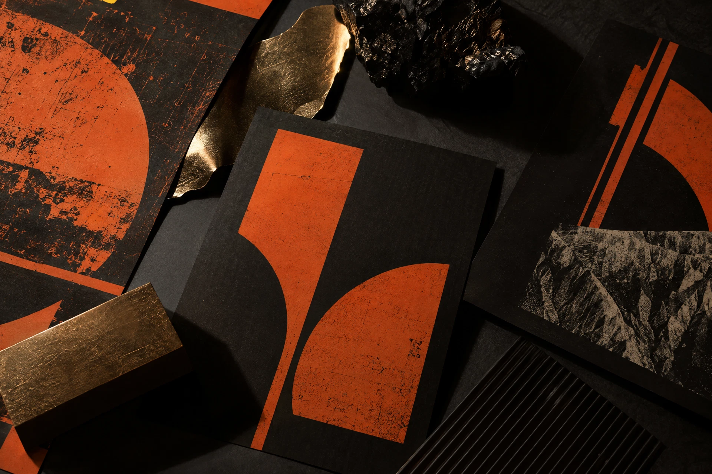

01 / Edit↗
Motion, with a pulse
Video editing · Color · Sound

Independent creative · Based in Nigeria
I’m Omondiagbe Wisdom Abiola. I edit video and direct AI animation for founders, creators, and brands who need content that ships fast. I also build the websites and automations around it.
See01 / Selected work
Selected projects across video, AI, web, and graphics. Each one was built to do a job.
Video editing · Color · Sound
AI animation · Art direction

03 / Build↗Web design · UX · Systems

04 / Brand↗Graphics design · Identity · Layout
02 / What I do
Video editing and AI animation are what I do best. Web, automation, and graphic design support them, so one person can take your project from first idea to launch.
Pacing, color, and sound that turn raw footage into a clear story.
Animated scenes and visual worlds for ideas that are hard to film.
Fast, clear websites with real personality, designed and built by one person.
Workflows and bots that handle the repetitive parts of your business.
Identity, layouts, and visual systems that keep a brand consistent.
From the first thought
to the final frame.
03 / The approach
I’m Omondiagbe Wisdom Abiola (most people call me Wisdom). I work across video, AI tools, web, graphics, and automation, from my base in Nigeria, with clients anywhere.
I care about the frame after the cut and the part after the scroll. Every project starts with one question: what does this need to make people feel?
I work alone, which means you talk directly to the person doing the work. When a project needs more hands, I bring in trusted specialists and manage them myself, so you still have one point of contact.
Whether I’m editing a film, animating an AI scene, building a website, or wiring up an automation, I keep going until the idea is clear, confident, and ready to use.
04 / How it comes together
Find out what the work needs to do.
Test references, rough cuts, and directions.
Turn the best idea into finished work.
Deliver it ready to use.
05 / Let’s talk
Available for select collaborationsSend a rough idea, a reference, or a full brief. I reply within 24 hours. If it’s a good fit, we’ll book a short call, and I’ll follow with a scope and quote.